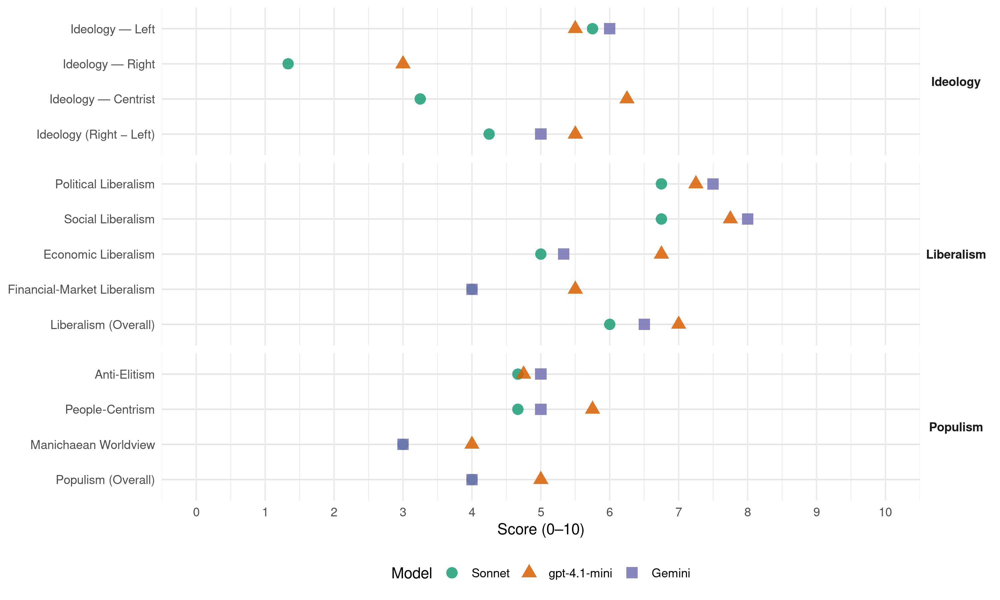

PVEM (Mexico, 2003)
manifesto_id 171101_200306
Get full text: This site shows derived annotations and short verbatim quotes only. The full manifesto text is © Manifesto Project / WZB — obtain it via manifesto-project.wzb.eu using the manifesto_id above.
Headline scores
| Dimension | Sonnet | gpt-4.1-mini | Gemini |
|---|---|---|---|
| Populism (Overall) | 4.0 | 5.0 | 4.0 |
| Anti-Elitism | 4.7 | 4.8 | 5.0 |
| People-Centrism | 4.7 | 5.8 | 5.0 |
| Manichaean Worldview | 3.0 | 4.0 | 3.0 |
| Ideology (Right − Left) | 4.2 | 5.5 | 5.0 |
| Liberalism (Overall) | 6.0 | 7.0 | 6.5 |
| Political Liberalism | 6.8 | 7.2 | 7.5 |
| Social Liberalism | 6.8 | 7.8 | 8.0 |
| Economic Liberalism | 5.0 | 6.8 | 5.3 |
| Financial-Market Liberalism | 4.0 | 5.5 | 4.0 |
Evidence per dimension
Economic Liberalism
Gemini · score 5.0 · mixed · chunk 1
“veles por el ser humano y no tan solo por el mercado”
una política económica que vele por el ser humano y no tan solo por el mercado, que eleve la calidad de vida
Gemini · score 6.0 · verified · chunk 2
“promoción del espíritu emprendedor y a la competencia”
enseñanza no se han orientado a la promoción del espíritu emprendedor y a la competencia. Observando esto, si nuestros estudiantes
Gemini · score 4.0 · verified · chunk 3
“fuerzas del mercado tanto internas como mundiales”
recientes del país le otorgaron una mayor participación a las fuerzas del mercado tanto internas como mundiales, también llevaron a un debilitamiento
Gemini · score 6.0 · verified · chunk 4
“Tratado de Libre Comercio ha”
Debemos aceptar que el Tratado de Libre Comercio ha traído beneficios a
gpt-4.1-mini · score 7.0 · verified · chunk 1
“impulsamos una política fiscal que en vez de aumentar impuestos, combata la evasión”
Apoyamos una política fiscal que en vez de aumentar impuestos, combata la evasión. E impulsamos una política empresarial que aproveche y apoye la experiencia y calidad de los emprendedores mexicanos.
gpt-4.1-mini · score 7.0 · verified · chunk 2
“promoveremos la ampliación de dichos incentivos en el ámbito fiscal y laboral”
…nuestro partido ha comenzado a realizar medidas a fin de proporcionar incentivos a las empresas nacionales a fin de que tengan interés en el desarrollo profesional de los estudiantes. Buscaremos la ampliación de dichos incentivos en el ámbito fiscal y laboral…
gpt-4.1-mini · score 7.0 · verified · chunk 3
“lograr un desarrollo económico en función del desarrollo sustentable con justicia social”
…el Partido Verde Ecologista de México tiene como propósito lograr un desarrollo económico en función del desarrollo sustentable con justicia social, basado en el diseño y operación de estrategias políticas que permitan hacer compatible un crecimiento económico con la protección de sus recursos naturales y del medio ambiente.
gpt-4.1-mini · score 6.0 · verified · chunk 4
“el Tratado de Libre Comercio ha traído beneficios a nuestro país y a importantes sectores de la economía”
Debemos aceptar que el Tratado de Libre Comercio ha traído beneficios a nuestro país y a importantes sectores de la economía. A diez años de vigencia del Tratado, el saldo definitivamente es positivo,
Sonnet · score 5.0 · mixed · chunk 1
“apertura conciente, es decir, cuidando el medio ambiente”
Nuestra política económica ante el mundo debe mantener como preocupación esencial la apertura conciente, es decir, cuidando el medio ambiente, la supervivencia de los valores culturales
Sonnet · score 5.0 · verified · chunk 2
“promoción del espíritu emprendedor y a la competencia”
la educación y la enseñanza no se han orientado a la promoción del espíritu emprendedor y a la competencia
Sonnet · score 4.0 · mixed · chunk 3
“impuestos ambientales sustituyen en parte a otros impuestos”
los impuestos ambientales sustituyen en parte a otros impuestos que desalientan o detienen el crecimiento económico de los países
Sonnet · score 5.0 · mixed · chunk 4
“Tratado de Libre Comercio ha traído beneficios”
Debemos aceptar que el Tratado de Libre Comercio ha traído beneficios a nuestro país y a importantes sectores de la economía.
Financial-Market Liberalism
Gemini · score 4.0 · verified · chunk 1
“adecuada reglamentación del sistema financiero”
basado en el desarrollo sustentable, generación de empleos, adecuada reglamentación del sistema financiero, federalismo fiscal sólido
gpt-4.1-mini · score 6.0 · verified · chunk 1
“buscar la conformación de un sistema financiero que promueva, canalice y proteja el ahorro interno”
Por otro lado, buscaremos la conformación de un sistema financiero que promueva, canalice y proteja el ahorro interno, ofrezca facilidades y destine recursos a acciones que incrementen la productividad de las pequeñas y medianas empresas, fomenten la creación de empleos y ofrezcan mayores oportunidades para la población.
gpt-4.1-mini · score 5.0 · verified · chunk 4
“la distribución de aguas internacionales en la vertiente del Río Bravo”
Durante el año que termina, México y Estados Unidos enfrentaron una disputa por la distribución de aguas internacionales en la vertiente del Río Bravo. El acuerdo busca conciliar las necesidades de abasto de las comunidades fronterizas y los productos agrícolas,
Sonnet · score 5.0 · mixed · chunk 1
“adecuada reglamentación del sistema financiero”
basado en el desarrollo sustentable, generación de empleos, adecuada reglamentación del sistema financiero, federalismo fiscal sólido, desarrollo regional del sector agrícola
Sonnet · score 4.0 · verified · chunk 3
“instituciones financieras se aliaron con los acreedores”
Las instituciones financieras se aliaron con los acreedores en la estrategia de manejo de la deuda. Las instituciones multilaterales no presionaron
Political Liberalism
Gemini · score 8.0 · verified · chunk 1
“Pugnamos por una democracia que permita”
Pugnamos por una democracia que permita a cada uno de los ciudadanos, en donde hagan uso de sus derechos fundamentales
Gemini · score 7.0 · verified · chunk 2
“un país libre, equitativo, justo y democrático”
representa un paso hacia la conformación de un país libre, equitativo, justo y democrático, por lo que la fiscalización es un asunto
Gemini · score 7.0 · verified · chunk 3
“estricta división de poderes y los balances”
presidencial que favorezca la estricta división de poderes y los balances adecuados entre las entidades, sus peculiaridades regionales
Gemini · score 8.0 · verified · chunk 4
“Estado mejor fortalecido y democrático”
Lo que hace falta es un Estado mejor fortalecido y democrático que haga posible
gpt-4.1-mini · score 7.0 · verified · chunk 1
“pugnamos por una democracia que permita a cada uno de los ciudadanos”
Pugnamos por una democracia que permita a cada uno de los ciudadanos, en donde hagan uso de sus derechos fundamentales a la libertad, la igualdad y el disfrute de condiciones de vida dignas.
gpt-4.1-mini · score 7.0 · verified · chunk 2
“la fiscalización es un asunto prioritario en nuestra plataforma de gobierno”
Cada peso gastado en educación, representa un paso hacia la conformación de un país libre, equitativo, justo y democrático, por lo que la fiscalización es un asunto prioritario en nuestra plataforma de gobierno, pues de no asegurar el correcto gasto en el sector educativo…
gpt-4.1-mini · score 8.0 · verified · chunk 3
“la participación política es un elemento esencial del gobierno democrático”
…el derecho a participar es un elemento esencial del gobierno democrático, inseparable de otros atributos de la democracia, tales como el consentimiento, la responsabilidad, el principio de la mayoría, la igualdad y la soberanía popular.
gpt-4.1-mini · score 7.0 · verified · chunk 4
“Cuando los valores y las instituciones se debilitan, las sociedades pierden cohesión”
Cuando los valores y las instituciones se debilitan, las sociedades pierden cohesión, las posiciones se endurecen y, mientras unos se vuelven más conservadores, otros se radicalizan.
Sonnet · score 7.0 · verified · chunk 1
“democracia que permita a cada uno de los ciudadanos”
Pugnamos por una democracia que permita a cada uno de los ciudadanos, en donde hagan uso de sus derechos fundamentales a la libertad, la igualdad
Sonnet · score 6.0 · verified · chunk 2
“democratización de la vida económica, política y social”
la legislación mexicana establece los procesos de participación social como uno de los componentes fundamentales en la relación del Estado con la sociedad, así como elemento clave para la democratización de la vida económica, política y social de nuestro país
Sonnet · score 7.0 · verified · chunk 3
“fortalecer nuestra democracia, la separación de poderes”
aún hay muchos temas pendientes que deben ser discutidos para fortalecer nuestra democracia, la separación de poderes y el respeto a la constitución y las leyes
Sonnet · score 7.0 · verified · chunk 4
“Estado mejor fortalecido y democrático”
Lo que hace falta es un Estado mejor fortalecido y democrático que haga posible una mayor equidad, libertad y justicia.
Liberalism (Overall)
Gemini · score 6.0 · verified · chunk 1
“Pugnamos por una democracia que permita”
Pugnamos por una democracia que permita a cada uno de los ciudadanos, en donde hagan uso de sus derechos fundamentales
Gemini · score 7.0 · verified · chunk 2
“un país libre, equitativo, justo y democrático”
representa un paso hacia la conformación de un país libre, equitativo, justo y democrático, por lo que la fiscalización es un asunto
Gemini · score 6.0 · verified · chunk 3
“estricta división de poderes y los balances”
presidencial que favorezca la estricta división de poderes y los balances adecuados entre las entidades, sus peculiaridades regionales
Gemini · score 7.0 · verified · chunk 4
“Estado mejor fortalecido y democrático”
Lo que hace falta es un Estado mejor fortalecido y democrático que haga posible
gpt-4.1-mini · score 7.0 · verified · chunk 1
“pugnamos por una democracia que permita a cada uno de los ciudadanos”
Pugnamos por una democracia que permita a cada uno de los ciudadanos, en donde hagan uso de sus derechos fundamentales a la libertad, la igualdad y el disfrute de condiciones de vida dignas.
gpt-4.1-mini · score 7.0 · verified · chunk 2
“la fiscalización es un asunto prioritario en nuestra plataforma de gobierno”
Cada peso gastado en educación, representa un paso hacia la conformación de un país libre, equitativo, justo y democrático, por lo que la fiscalización es un asunto prioritario en nuestra plataforma de gobierno, pues de no asegurar el correcto gasto en el sector educativo…
gpt-4.1-mini · score 8.0 · verified · chunk 3
“la participación política es un elemento esencial del gobierno democrático”
…el derecho a participar es un elemento esencial del gobierno democrático, inseparable de otros atributos de la democracia, tales como el consentimiento, la responsabilidad, el principio de la mayoría, la igualdad y la soberanía popular.
gpt-4.1-mini · score 6.0 · verified · chunk 4
“Cuando los valores y las instituciones se debilitan, las sociedades pierden cohesión”
Cuando los valores y las instituciones se debilitan, las sociedades pierden cohesión, las posiciones se endurecen y, mientras unos se vuelven más conservadores, otros se radicalizan.
Sonnet · score 6.0 · verified · chunk 1
“democracia que permita a cada uno de los ciudadanos”
Pugnamos por una democracia que permita a cada uno de los ciudadanos, en donde hagan uso de sus derechos fundamentales a la libertad, la igualdad
Sonnet · score 6.0 · verified · chunk 2
“equidad e igualdad de género son asuntos primordiales”
reconocemos que la equidad e igualdad de género son asuntos primordiales de justicia social, y una base para el desarrollo sustentable de nuestro país
Sonnet · score 6.0 · verified · chunk 3
“fortalecer nuestra democracia, la separación de poderes”
aún hay muchos temas pendientes que deben ser discutidos para fortalecer nuestra democracia, la separación de poderes y el respeto a la constitución y las leyes
Sonnet · score 6.0 · verified · chunk 4
“mayor equidad, libertad y justicia”
Lo que hace falta es un Estado mejor fortalecido y democrático que haga posible una mayor equidad, libertad y justicia.
Anti-Elitism
Gemini · score 6.0 · verified · chunk 1
“estrategia discursiva de los gobiernos en turno”
creación de plazas laborales parece haber sido tan solo una estrategia discursiva de los gobiernos en turno y de los partidos políticos tradicionales.
Gemini · score 5.0 · verified · chunk 2
“Lo quieran entender o no los gobernantes actuales”
generando una mayor tensión social. Lo quieran entender o no los gobernantes actuales, las personas desfavorecidas están decididas
Gemini · score 6.0 · verified · chunk 3
“un sistema Presidencialista exagerado que aun existe”
explicar nuestros problemas nacionales. Un ejemplo es el sistema Presidencialista exagerado que aun existe en nuestro país. Por ello pugnamos por la reducción
Gemini · score 3.0 · verified · chunk 4
“intereses de facciones en el gobierno”
coloque a los intereses de facciones en el gobierno por encima de la sociedad
gpt-4.1-mini · score 5.0 · verified · chunk 1
“una política económica que vele por el ser humano y no tan solo por el mercado”
Proponemos que la reestructuración de la economía se dé con arreglo a criterios defendibles ecológica y socialmente, una política económica que vele por el ser humano y no tan solo por el mercado, que eleve la calidad de vida y no la cantidad de pobres, que aumente el empleo y lleve los servicios de salud a la gente.
gpt-4.1-mini · score 6.0 · verified · chunk 2
“los privilegiados estarán condenados a vivir en urbanizaciones-fortaleza”
…y los privilegiados estarán condenados a vivir en urbanizaciones-fortaleza, con rejas y alambradas elevadas, de las que cada vez tendrán menos capacidad de salir. Del mismo modo, no basta tan solo con la implementación de un programa regional que edifique…
gpt-4.1-mini · score 2.0 · verified · chunk 3
“rechazamos el Foxismo pseudosocial y condenamos su insistencia en moderar la desigualdad apenas con políticas sociales compensatorias”
…y condenamos su insistencia en moderar la desigualdad apenas con políticas sociales compensatorias, incapaces de disminuir una desigualdad que radica en la estructura de la economía, incluso aunque no estuviera, como lo está, ávido de recursos necesarios para funcionar y que no utiliza.
gpt-4.1-mini · score 6.0 · verified · chunk 4
“la política oportunista que se construye con declaraciones que salen de los estudios de mercadotecnia”
La lucha política requiere de nuevas exigencias que la lleven a alejarse de la política oportunista que se construye con declaraciones que salen de los estudios de mercadotecnia, con acuerdos que terminan en complicidades y con faltas de compromiso que culminan en irresponsabilidades.
Sonnet · score 6.0 · verified · chunk 1
“partidos políticos tradicionales”
la creación de plazas laborales parece haber sido tan solo una estrategia discursiva de los gobiernos en turno y de los partidos políticos tradicionales. Esto, ha llevado a que en nuestro México contemporáneo
Sonnet · score 3.0 · verified · chunk 2
“la imperante necesidad de poder y dinero de unos cuantos”
los principales factores de tal irresponsabilidad son por un lado, la falta de conciencia, la imperante necesidad de poder y dinero de unos cuantos y la más importante: la falta de normatividad específica
Sonnet · score 4.0 · mixed · chunk 3
“rechazamos el Foxismo pseudosocial”
Por otra parte, rechazamos el Foxismo pseudosocial y condenamos su insistencia en moderar la desigualdad apenas con políticas sociales compensatorias
Sonnet · score 5.0 · verified · chunk 4
“política oportunista que se construye con declaraciones”
La lucha política requiere de nuevas exigencias que la lleven a alejarse de la política oportunista que se construye con declaraciones que salen de los estudios de mercadotecnia, con acuerdos que terminan en complicidades
Ideology — Centrist
gpt-4.1-mini · score 6.0 · verified · chunk 1
“solo en una mesa de unidad donde todos los sectores estén incluidos”
Estamos convencidos de que solo en una mesa de unidad donde todos los sectores estén incluidos entorno a un objetivo común, es en donde se podrá llegar al Gran Acuerdo que necesita México.
gpt-4.1-mini · score 7.0 · verified · chunk 2
“articular un programa regional para una educación incluyente e integral para todos”
…por ello, nuestro partido pretende articular un programa regional para una educación incluyente e integral para todos, en donde exista una mejor distribución del gasto entre los distintos órdenes de gobierno…
gpt-4.1-mini · score 5.0 · verified · chunk 3
“un Nuevo Pacto es todo un proceso serio, con distintas etapas”
…un Nuevo Pacto es todo un proceso serio, con distintas etapas. No es suficiente con lo que se firmó, se debía especificar cómo, cuándo y dónde se llevarían a cabo las mesas de trabajo para comprometernos más a fondo y lograr todos los objetivos de reforma necesarios.
gpt-4.1-mini · score 7.0 · verified · chunk 4
“buscar y exaltar más las coincidencias, en el sentido de solucionar la grave problemática social”
Pero esto sólo se logrará si somos capaces de buscar y exaltar más las coincidencias, en el sentido de solucionar la grave problemática social que ha sido cuna de los movimientos beligerantes y de los oportunistas que consideran el cambio en ocasión de corsarios,
Sonnet · score 3.0 · verified · chunk 1
“Nuevo Pacto Social para hacer realidad”
Impulsamos un Nuevo Pacto Social para hacer realidad la Reforma del Estado, la rendición de cuentas, y el cambio del Sistema Político Mexicano
Sonnet · score 3.0 · verified · chunk 2
“un país libre, equitativo, justo y democrático”
Cada peso gastado en educación, representa un paso hacia la conformación de un país libre, equitativo, justo y democrático
Sonnet · score 3.0 · verified · chunk 3
“encontrar puntos en común y no de distanciamiento”
el Partido Verde Ecologista de México con este acercamiento hacia la ciudadanía y fuerzas políticas, trata de encontrar puntos en común y no de distanciamiento
Sonnet · score 4.0 · verified · chunk 4
“No proponemos una tercera vía porque no existe”
No proponemos una tercera vía porque no existe una segunda. Proponemos una alternativa democratizante a ese camino que parece único.
Ideology — Left
Gemini · score 6.0 · verified · chunk 1
“veles por el ser humano y no tan solo por el mercado”
una política económica que vele por el ser humano y no tan solo por el mercado, que eleve la calidad de vida
Gemini · score 6.0 · verified · chunk 2
“las desigualdades en nuestra nación persisten”
2. Educación para todos Las desigualdades en nuestra nación persisten, complicando la posibilidad de una educación de calidad
Gemini · score 6.0 · verified · chunk 3
“desigualdades sociales y regionales ha aumentado”
síntomas críticos de deterioro en donde la pobreza y las desigualdades sociales y regionales ha aumentado. Los instrumentos tradicionales y los nuevos mecanismos
gpt-4.1-mini · score 6.0 · verified · chunk 1
“una política económica que vele por el ser humano y no tan solo por el mercado”
Proponemos que la reestructuración de la economía se dé con arreglo a criterios defendibles ecológica y socialmente, una política económica que vele por el ser humano y no tan solo por el mercado, que eleve la calidad de vida y no la cantidad de pobres, que aumente el empleo y lleve los servicios de salud a la gente.
gpt-4.1-mini · score 6.0 · verified · chunk 2
“un país libre, equitativo, justo y democrático”
Cada peso gastado en educación, representa un paso hacia la conformación de un país libre, equitativo, justo y democrático, por lo que la fiscalización es un asunto prioritario en nuestra plataforma de gobierno…
gpt-4.1-mini · score 4.0 · verified · chunk 3
“queremos democratizar la economía y volver a la democracia capaz de enfrentar la desigualdad”
…queremos democratizar la economía y volver a la democracia capaz de enfrentar la desigualdad. Queremos crear las bases para una nueva generación de proyectos nacionales de desarrollo que no acepten la falsa elección entre la sumisión a las nuevas reglas del Juego en la economía internacional y la fe en el autoritarismo desarrollista de un Estado guía.
gpt-4.1-mini · score 6.0 · verified · chunk 4
“rechazamos el Foxismo pseudosocial y condenamos su insistencia en moderar la desigualdad apenas con políticas sociales compensatorias”
Por otra parte, rechazamos el Foxismo pseudosocial y condenamos su insistencia en moderar la desigualdad apenas con políticas sociales compensatorias, incapaces de disminuir una desigualdad que radica en la estructura de la economía,
Sonnet · score 6.0 · verified · chunk 1
“justicia social y en los derechos del Hombre”
interesados fundamentalmente en el cuidado y conservación de la naturaleza y del medio ambiente, en la justicia social y en los derechos del Hombre y de todo ser vivo
Sonnet · score 5.0 · verified · chunk 2
“defender los derechos de los indígenas”
Nosotros pugnamos por defender los derechos de los indígenas y uno de ellos, es que la educación, se la ha negado por siglos
Sonnet · score 6.0 · verified · chunk 3
“democratizar la economía y volver a la democracia”
Queremos democratizar la economía y volver a la democracia capaz de enfrentar la desigualdad.
Sonnet · score 6.0 · verified · chunk 4
“democratizar la economía y volver a la democracia”
Queremos democratizar la economía y volver a la democracia capaz de enfrentar la desigualdad.
Ideology (Right − Left)
Gemini · score 5.0 · verified · chunk 1
“veles por el ser humano y no tan solo por el mercado”
una política económica que vele por el ser humano y no tan solo por el mercado, que eleve la calidad de vida
Gemini · score 5.0 · verified · chunk 2
“las desigualdades en nuestra nación persisten”
2. Educación para todos Las desigualdades en nuestra nación persisten, complicando la posibilidad de una educación de calidad
Gemini · score 5.0 · verified · chunk 3
“desigualdades sociales y regionales ha aumentado”
síntomas críticos de deterioro en donde la pobreza y las desigualdades sociales y regionales ha aumentado. Los instrumentos tradicionales y los nuevos mecanismos
gpt-4.1-mini · score 6.0 · verified · chunk 1
“una política económica que vele por el ser humano y no tan solo por el mercado”
Proponemos que la reestructuración de la economía se dé con arreglo a criterios defendibles ecológica y socialmente, una política económica que vele por el ser humano y no tan solo por el mercado, que eleve la calidad de vida y no la cantidad de pobres, que aumente el empleo y lleve los servicios de salud a la gente.
gpt-4.1-mini · score 6.0 · verified · chunk 2
“un país libre, equitativo, justo y democrático”
Cada peso gastado en educación, representa un paso hacia la conformación de un país libre, equitativo, justo y democrático, por lo que la fiscalización es un asunto prioritario en nuestra plataforma de gobierno…
gpt-4.1-mini · score 4.0 · verified · chunk 3
“queremos democratizar la economía y volver a la democracia capaz de enfrentar la desigualdad”
…queremos democratizar la economía y volver a la democracia capaz de enfrentar la desigualdad. Queremos crear las bases para una nueva generación de proyectos nacionales de desarrollo que no acepten la falsa elección entre la sumisión a las nuevas reglas del Juego en la economía internacional y la fe en el autoritarismo desarrollista de un Estado guía.
gpt-4.1-mini · score 6.0 · verified · chunk 4
“rechazamos el Foxismo pseudosocial y condenamos su insistencia en moderar la desigualdad apenas con políticas sociales compensatorias”
Por otra parte, rechazamos el Foxismo pseudosocial y condenamos su insistencia en moderar la desigualdad apenas con políticas sociales compensatorias, incapaces de disminuir una desigualdad que radica en la estructura de la economía,
Sonnet · score 5.0 · verified · chunk 1
“justicia social y en los derechos del Hombre”
interesados fundamentalmente en el cuidado y conservación de la naturaleza y del medio ambiente, en la justicia social y en los derechos del Hombre y de todo ser vivo
Sonnet · score 3.0 · verified · chunk 2
“defender los derechos de los indígenas”
Nosotros pugnamos por defender los derechos de los indígenas y uno de ellos, es que la educación, se la ha negado por siglos
Sonnet · score 4.0 · verified · chunk 3
“democratizar la economía y volver a la democracia”
Queremos democratizar la economía y volver a la democracia capaz de enfrentar la desigualdad.
Sonnet · score 5.0 · verified · chunk 4
“Proponemos una alternativa democratizante”
No proponemos una tercera vía porque no existe una segunda. Proponemos una alternativa democratizante a ese camino que parece único.
Ideology — Right
gpt-4.1-mini · score 4.0 · verified · chunk 1
“cuidando el medio ambiente, la supervivencia de los valores culturales de México”
Nuestra política económica ante el mundo debe mantener como preocupación esencial la apertura conciente, es decir, cuidando el medio ambiente, la supervivencia de los valores culturales de México, la justicia social, y vigilando la competencia desleal.
gpt-4.1-mini · score 3.0 · verified · chunk 2
“deben desaparecer todos los centros gueto, tanto los de elevado número de alumnos en situación de desventaja, como los elitistas”
…deben desaparecer todos los centros gueto, tanto los de elevado número de alumnos en situación de desventaja, como los elitistas que excluyen a los “malos” estudiantes, y que fomentan, en la práctica, las actitudes segregadoras, racistas e insolidarias…
gpt-4.1-mini · score 2.0 · verified · chunk 3
“fortalecer la identidad nacional en las zonas fronterizas de México, exigiendo trato igual para los iguales entre las naciones vecinas”
…fortalecer la identidad nacional en las zonas fronterizas de México, exigiendo trato igual para los iguales entre las naciones vecinas. Promover el equilibrio entre los países pobres y ricos, que redunde en una mayor cooperación internacional en el ámbito científico, tecnológico y cultural…
gpt-4.1-mini · score 3.0 · verified · chunk 4
“la lucha contra el terrorismo internacional, Derechos humanos y promoción de la democracia, Migración Internacional”
Los principales temas de la agenda multilateral deben permanecer en un continuo proceso de fortalecimiento y renovación, para el PVEM éstos son: Desarme, Prevención de desastres naturales, lucha contra el terrorismo internacional, Derechos humanos y promoción de la democracia, Migración Internacional,
Sonnet · score 2.0 · verified · chunk 1
“supervivencia de los valores culturales de México”
cuidando el medio ambiente, la supervivencia de los valores culturales de México, la justicia social, y vigilando la competencia desleal
Sonnet · score 1.0 · verified · chunk 3
“Fortalecer la identidad nacional en las zonas fronterizas”
Fortalecer la identidad nacional en las zonas fronterizas de México, exigiendo trato igual para los iguales entre las naciones vecinas.
Sonnet · score 1.0 · verified · chunk 4
“autodeterminación de los pueblos; la no intervención”
principios normativos…la autodeterminación de los pueblos; la no intervención; la solución pacífica de controversias
Manichaean Worldview
Gemini · score 4.0 · verified · chunk 3
“viejos ciclos de reacción populista contra la intolerancia tecnocrática”
caminos que eviten que volvamos a los viejos ciclos de reacción populista contra la intolerancia tecnocrática, mismos que terminan en nuevos retrasos y mayor
Gemini · score 2.0 · verified · chunk 4
“viejos ciclos de reacción populista”
eviten que volvamos a los viejos ciclos de reacción populista contra la intolerancia
gpt-4.1-mini · score 4.0 · verified · chunk 1
“las mafias controlan el país de tal manera”
Las mafias controlan el país de tal manera que consideramos que en la situación actual; esto se manejará como una cuestión de vital importancia para el Estado, por que sino podría vulnerar las Instituciones del País.
gpt-4.1-mini · score 5.0 · mixed · chunk 2
“los privilegiados estarán condenados a vivir en urbanizaciones-fortaleza”
…los privilegiados estarán condenados a vivir en urbanizaciones-fortaleza, con rejas y alambradas elevadas, de las que cada vez tendrán menos capacidad de salir. Del mismo modo, no basta tan solo con la implementación de un programa regional que edifique…
gpt-4.1-mini · score 3.0 · verified · chunk 3
“cuando los valores y las instituciones se debilitan, las sociedades pierden cohesión, las posiciones se endurecen”
…cuando los valores y las instituciones se debilitan, las sociedades pierden cohesión, las posiciones se endurecen y, mientras unos se vuelven más conservadores, otros se radicalizan. Nada puede sustituir los valores y las instituciones, no lo puede hacer ninguna visión que coloque a los intereses de facciones en el gobierno por encima de la sociedad…
gpt-4.1-mini · score 5.0 · verified · chunk 4
“los viejos ciclos de reacción populista contra la intolerancia tecnocrática”
Lo que le hace falta a nuestra sociedad es discutir los nuevos paradigmas, enfoques y caminos que eviten que volvamos a los viejos ciclos de reacción populista contra la intolerancia tecnocrática, mismos que terminan en nuevos retrasos y mayor pobreza; o de una agitación sin propósito que da lugar a las nuevas formas de autoritarismo.
Sonnet · score 4.0 · verified · chunk 1
“Las mafias controlan el país”
no se castigan más que el 10% de delitos denunciados. Las mafias controlan el país de tal manera que consideramos que en la situación actual
Sonnet · score 2.0 · verified · chunk 2
“gobernantes actuales”
Lo quieran entender o no los gobernantes actuales, las personas desfavorecidas están decididas, como todos, a vivir lo mejor que puedan
Sonnet · score 3.0 · verified · chunk 3
“volver a los viejos ciclos de reacción populista”
que eviten que volvamos a los viejos ciclos de reacción populista contra la intolerancia tecnocrática, mismos que terminan en nuevos retrasos y mayor pobreza
Sonnet · score 3.0 · verified · chunk 4
“rechazamos el Foxismo pseudosocial y condenamos”
Por otra parte, rechazamos el Foxismo pseudosocial y condenamos su insistencia en moderar la desigualdad apenas con políticas sociales compensatorias
People-Centrism
Gemini · score 5.0 · verified · chunk 1
“la exclusión que vive nuestro pueblo”
eliminando los obstáculos que encuentra la sociedad en su conjunto para lograrlo y la exclusión que vive nuestro pueblo.
Gemini · score 6.0 · verified · chunk 2
“involucrar al pueblo tanto en los trabajos”
programas de participación en materia ambiental para involucrar al pueblo tanto en los trabajos como en la toma de decisiones.
Gemini · score 5.0 · verified · chunk 3
“el poder público dimana del pueblo”
establece que el poder público dimana del pueblo y las formas en que este será renovado así
Gemini · score 4.0 · verified · chunk 4
“intereses de la ciudadanía se tomen”
a fin de que los intereses de la ciudadanía se tomen en cuenta en cualquier
gpt-4.1-mini · score 6.0 · verified · chunk 1
“solo en una mesa de unidad donde todos los sectores estén incluidos”
Estamos convencidos de que solo en una mesa de unidad donde todos los sectores estén incluidos entorno a un objetivo común, es en donde se podrá llegar al Gran Acuerdo que necesita México.
gpt-4.1-mini · score 7.0 · verified · chunk 2
“las personas desfavorecidas están decididas, como todos, a vivir lo mejor que puedan”
…Lo quieran entender o no los gobernantes actuales, las personas desfavorecidas están decididas, como todos, a vivir lo mejor que puedan, y si no lo hacen por medios adecuados facilitados por la sociedad, lo harán a costa de los demás…
gpt-4.1-mini · score 3.0 · verified · chunk 3
“queremos democratizar la economía y volver a la democracia capaz de enfrentar la desigualdad”
…queremos democratizar la economía y volver a la democracia capaz de enfrentar la desigualdad. Queremos crear las bases para una nueva generación de proyectos nacionales de desarrollo que no acepten la falsa elección entre la sumisión a las nuevas reglas del Juego en la economía internacional y la fe en el autoritarismo desarrollista de un Estado guía.
gpt-4.1-mini · score 7.0 · verified · chunk 4
“devolver a nuestras sociedades la esperanza de una auténtica propuesta ambiental y socialmente para los mexicanos”
Necesitamos de nuevas alternativas que devuelvan a nuestras sociedades la esperanza de una auténtica propuesta ambiental y socialmente para los mexicanos. En el México moderno existimos organizaciones políticas de carácter nacional, estatal, regional y local, que desarrollamos diversas acciones para defender nuestros derechos,
Sonnet · score 5.0 · verified · chunk 1
“la gran mayoría de la población”
fenómenos estructurales y generalizados que afectan a la gran mayoría de la población. En este sentido, la orientación de la política económica
Sonnet · score 4.0 · verified · chunk 2
“todos los mexicanos tengan acceso a la educación”
más lo tiene el que todos los mexicanos tengan acceso a la educación, a que miles de indígenas aprendan a leer y a escribir
Sonnet · score 5.0 · mixed · chunk 3
“todos podamos contribuir a la reconstrucción del Estado mexicano”
El Partido Verde Ecologista de México se suma a la voluntad política de la ciudadanía con el fin de que todos podamos contribuir a la reconstrucción del Estado mexicano
Sonnet · score 5.0 · verified · chunk 4
“devuelvan a nuestras sociedades la esperanza”
Necesitamos de nuevas alternativas que devuelvan a nuestras sociedades la esperanza de una auténtica propuesta ambiental y socialmente para los mexicanos.
Populism (Overall)
Gemini · score 4.0 · verified · chunk 1
“estrategia discursiva de los gobiernos en turno”
creación de plazas laborales parece haber sido tan solo una estrategia discursiva de los gobiernos en turno y de los partidos políticos tradicionales.
Gemini · score 4.0 · verified · chunk 2
“Lo quieran entender o no los gobernantes actuales”
generando una mayor tensión social. Lo quieran entender o no los gobernantes actuales, las personas desfavorecidas están decididas
Gemini · score 5.0 · verified · chunk 3
“viejos ciclos de reacción populista”
caminos que eviten que volvamos a los viejos ciclos de reacción populista contra la intolerancia tecnocrática
Gemini · score 3.0 · verified · chunk 4
“viejos ciclos de reacción populista”
eviten que volvamos a los viejos ciclos de reacción populista contra la intolerancia
gpt-4.1-mini · score 5.0 · verified · chunk 1
“una política económica que vele por el ser humano y no tan solo por el mercado”
Proponemos que la reestructuración de la economía se dé con arreglo a criterios defendibles ecológica y socialmente, una política económica que vele por el ser humano y no tan solo por el mercado, que eleve la calidad de vida y no la cantidad de pobres, que aumente el empleo y lleve los servicios de salud a la gente.
gpt-4.1-mini · score 6.0 · verified · chunk 2
“los privilegiados estarán condenados a vivir en urbanizaciones-fortaleza”
…los privilegiados estarán condenados a vivir en urbanizaciones-fortaleza, con rejas y alambradas elevadas, de las que cada vez tendrán menos capacidad de salir. Del mismo modo, no basta tan solo con la implementación de un programa regional que edifique…
gpt-4.1-mini · score 3.0 · verified · chunk 3
“rechazamos el Foxismo pseudosocial y condenamos su insistencia en moderar la desigualdad apenas con políticas sociales compensatorias”
…y condenamos su insistencia en moderar la desigualdad apenas con políticas sociales compensatorias, incapaces de disminuir una desigualdad que radica en la estructura de la economía, incluso aunque no estuviera, como lo está, ávido de recursos necesarios para funcionar y que no utiliza.
gpt-4.1-mini · score 6.0 · verified · chunk 4
“la política oportunista que se construye con declaraciones que salen de los estudios de mercadotecnia”
La lucha política requiere de nuevas exigencias que la lleven a alejarse de la política oportunista que se construye con declaraciones que salen de los estudios de mercadotecnia, con acuerdos que terminan en complicidades y con faltas de compromiso que culminan en irresponsabilidades.
Sonnet · score 5.0 · verified · chunk 1
“gobiernos en turno y de los partidos políticos tradicionales”
la creación de plazas laborales parece haber sido tan solo una estrategia discursiva de los gobiernos en turno y de los partidos políticos tradicionales
Sonnet · score 3.0 · verified · chunk 2
“la imperante necesidad de poder y dinero de unos cuantos”
los principales factores de tal irresponsabilidad son por un lado, la falta de conciencia, la imperante necesidad de poder y dinero de unos cuantos y la más importante: la falta de normatividad específica
Sonnet · score 4.0 · mixed · chunk 3
“rechazamos el Foxismo pseudosocial”
Por otra parte, rechazamos el Foxismo pseudosocial y condenamos su insistencia en moderar la desigualdad apenas con políticas sociales compensatorias
Sonnet · score 4.0 · verified · chunk 4
“desterraremos de manera efectiva al poder absoluto”
trabajando conjuntamente los dos Poderes de la Unión desterraremos de manera efectiva al poder absoluto y a la injusticia social.
Social Liberalism